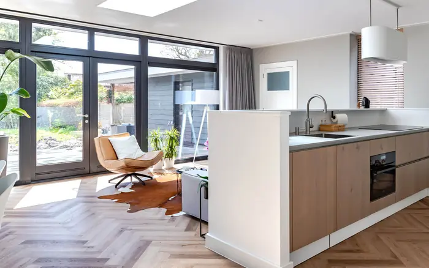
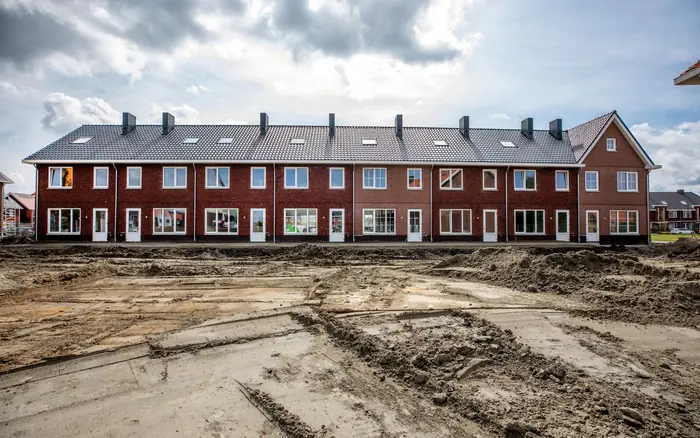
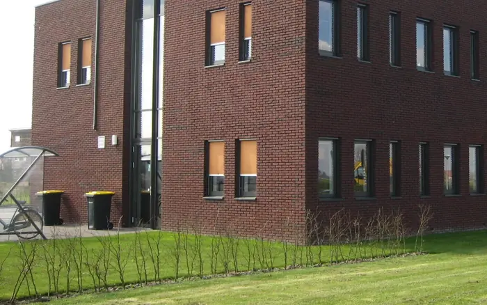

Verbouwing
Een verbouwing aan uw woning. Voor de offerte komt de aannemer eerst bij u kijken.
Home / Diensten
Wat Nagtegaal bouwt, zoals het bij de KvK staat en zoals klanten het noemen.
Wat Nagtegaal bouwt, zoals het bedrijf bij de KvK staat ingeschreven en zoals klanten het noemen.

Een verbouwing aan uw woning. Voor de offerte komt de aannemer eerst bij u kijken.

Het bouwen van woningen. Daarvoor staat Nagtegaal bij de KvK ingeschreven.

Bouw van utiliteitsgebouwen: alles wat geen woning is, zoals een bedrijfspand.
Een andere klus in gedachten? Bel 030 262 6688 en vraag of Nagtegaal hem doet.
Vertel kort wat u wilt laten bouwen of verbouwen. Voor een verbouwing komt Nagtegaal bij u kijken.